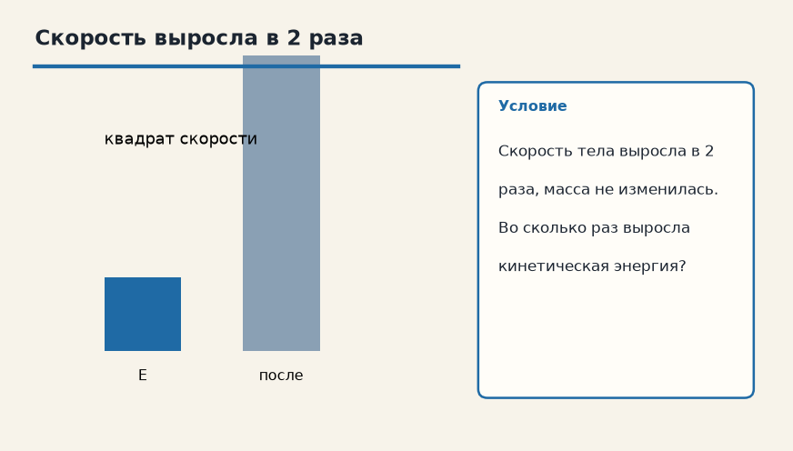

Тема «Кинетическая и потенциальная энергия»: физический смысл, единицы величин, типичные ошибки и два разобранных примера.

Схема к условию.
Физический смысл
Кинетическая — энергия движения (E_к = mv² / 2). Потенциальная — энергия положения (E_п = mgh для поднятых над землей тел).
Кинетическая энергия — энергия движения: E_к = mv²/2. Скорость входит в квадрате, поэтому рост скорости в 2 раза поднимает энергию в 4 раза.
Потенциальная энергия поднятого тела E_п = mgh отсчитывается от выбранного нуля высоты. Само число h без договорённости «откуда меряем» не имеет смысла, а разность высот — имеет.
В замкнутой системе, где трение не переводит энергию в тепло, сумма E_к + E_п сохраняется: маятник в верхней точке почти весь в потенциальной энергии и скорость там ноль, внизу высота минимальна и скорость максимальна. Энергия не исчезла, она сменила вид.
Формула и единицы
E_к = mv² / 2
E_п = mgh
E_к = mv²/2, E_п = mgh для тела у Земли. В замкнутой системе без потерь их сумма сохраняется.
Пояснение
Маятник. В верхней точке скорость = 0 (вся энергия — потенциальная). В нижней — скорость max (вся энергия — кинетическая).
Маятник: вверху скорость равна нулю и энергия потенциальная, внизу скорость наибольшая и энергия кинетическая.
Типичные ошибки
Скорость входит в кинетическую энергию в квадрате! Если скорость выросла в 2 раза, энергия выросла в 4 раза.
Скорость в кинетической энергии в квадрате. Удвоил v — учетверил E_к, а не удвоил.
Схему к задаче нарисуйте сами. Решение открывается отдельно.
Разбор 1
Кинетическая
Тело массой 2 кг движется со скоростью 4 м/с. Найдите кинетическую энергию.
Сначала данные, затем перевод в СИ, если он нужен, потом ход и ответ.
Дано. m = 2 кг, v = 4 м/с
В СИ. Перевод не нужен: все величины уже заданы в СИ.
Найти. Eк
Решение.
Eк = 2 · 16 / 2 = 16 Дж.
16 Дж.
Схема для сверки. Её рисуют до того, как открывают решение.
Разбор 2
Подъём
Груз 3 кг подняли на 5 м. g = 10 м/с². Найдите прирост потенциальной энергии.
Сначала данные, затем перевод в СИ, если он нужен, потом ход и ответ.
Дано. m = 3 кг, h = 5 м, g = 10 м/с²
В СИ. Перевод не нужен: все величины уже заданы в СИ.
Найти. Eп
Решение.
Eп = 3 · 10 · 5 = 150 Дж.
150 Дж.
Схема для сверки. Её рисуют до того, как открывают решение.
Разбор 3
Скорость втрое
Скорость выросла в 3 раза при той же массе. Во сколько раз выросла кинетическая энергия?
Сначала данные, затем перевод в СИ, если он нужен, потом ход и ответ.
Дано. v₂ = 3 v₁
В СИ. Перевод не нужен: все величины уже заданы в СИ.
Найти. Eк₂ / Eк₁
Решение.
Энергия пропорциональна v².
3² = 9.
В 9 раз.
Схема для сверки. Её рисуют до того, как открывают решение.
Разбор 4
Горка без трения
Санки массой 4 кг съезжают без трения с высоты 5 м из покоя. g = 10 м/с². Найдите скорость внизу.
Сначала данные, затем перевод в СИ, если он нужен, потом ход и ответ.
Дано. m = 4 кг, h = 5 м, v₀ = 0, g = 10 м/с²
В СИ. Перевод не нужен: все величины уже заданы в СИ.
Найти. v
Решение.
m g h = m v² / 2, масса сокращается.
10 · 5 = v² / 2, v² = 100, v = 10 м/с.
10 м/с.
Схема для сверки. Её рисуют до того, как открывают решение.
Разбор 5
Маятник
Маятник отвели и отпустили, трением пренебрегают. В какой точке пути кинетическая энергия наибольшая?
Сначала данные, затем перевод в СИ, если он нужен, потом ход и ответ.
Дано. потерями пренебрегают
В СИ. Перевод не нужен: все величины уже заданы в СИ.
Найти. положение
Решение.
Внизу высота наименьшая, потенциальная энергия минимальна.
Кинетическая там максимальна.
В нижней точке.
Схема для сверки. Её рисуют до того, как открывают решение.
Разбор 6
Сантиметры
Шарик массой 50 г имеет скорость 2 м/с. Найдите кинетическую энергию.
Сначала данные, затем перевод в СИ, если он нужен, потом ход и ответ.
Дано. m = 50 г, v = 2 м/с
В СИ.
50 г = 0,05 кг.
Найти. Eк
Решение.
Eк = 0,05 · 4 / 2 = 0,1 Дж.
0,1 Дж.
Схема для сверки. Её рисуют до того, как открывают решение.
Разбор 7
Нуль высоты
Потенциальную энергию одного и того же тела посчитали от пола и от подоконника. Какая величина в задаче на переход энергии всё же одинакова?
Сначала данные, затем перевод в СИ, если он нужен, потом ход и ответ.
Дано. два выбора нуля высоты
В СИ. Перевод не нужен: все величины уже заданы в СИ.
Найти. что сравнивают
Решение.
Сам нуль выбирают.
В закон сохранения входит изменение высоты, разность энергий.
Разность потенциальных энергий, то есть изменение высоты.
Схема для сверки. Её рисуют до того, как открывают решение.